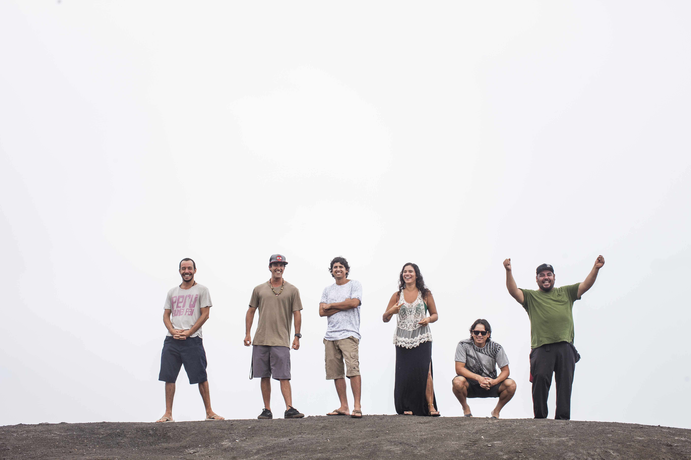

Biography 😁
Con guitarras, sintetizadores, teclados y una base rítmica de Reggae y Rock, Laguna Pai empezó
a difundir su mensaje musical en Lima en el 2008. La influencia de Bob Marley & The Wailers, Pink Floyd,
Manu Chao y las raíces de la música peruana se perciben en sus arreglos y composiciones. Ha compartido escenario con bandas como The Wailers, Damian Marley,
The Roots Radics Band, Israel Vibration,
Johnny Dread, Don Carlos, Steel Pulse, Bambu Station, Soja, The Gladiators, entre otros.
El mensaje es la prioridad de la banda. Sus letras tocan temas cruciales: conservación ambiental, igualdad, inclusión social,
introspección y espiritualidad, reclamando generar conciencia y atención alrededor de su música.
Con tres discos en su haber y una versión Dub de su última entrega Resiliencia, Laguna Pai se prepara para este año lanzar
su cuarto material discográfico así como también prepara giras para México, Alemania y Argentina.
Official social networks 😁
Official web